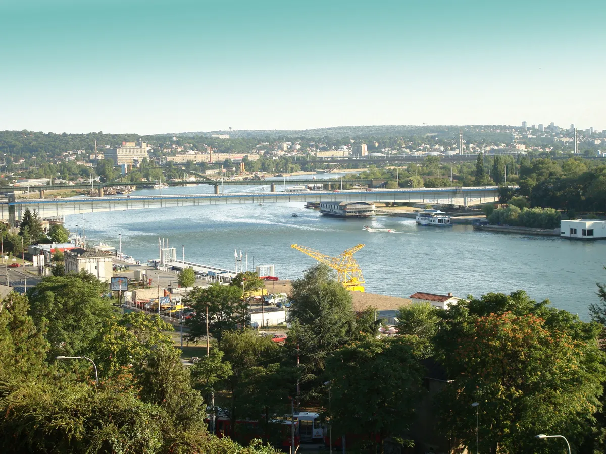
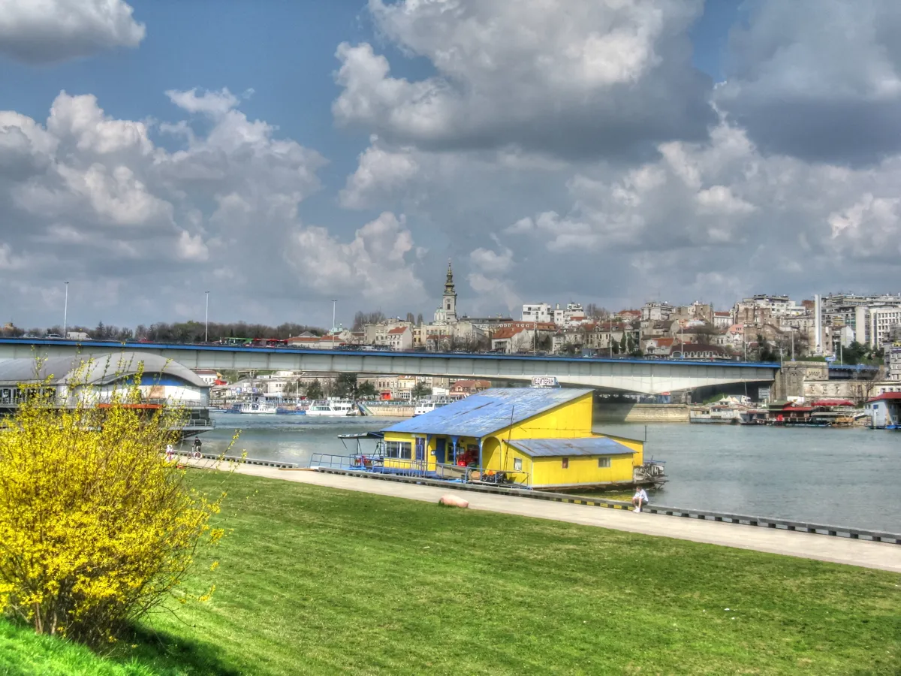

Belgrade clubs
Belgrade clubs and nightlife, from Drugstore to the river rafts
A club in a former slaughterhouse, another that moved off its boat, and river rafts the city spent two years clearing: where Belgrade's electronic music happens now.
Belgrade clubs beyond the bars.
Belgrade night life guides often cover bars, pub crawls and cocktails. This guide focuses on Belgrade nightclubs with documented electronic-music programming, including Drugstore's former slaughterhouse and Barutana's open-air space by a historic gunpowder magazine. Some of the best-known nightclubs in Belgrade operated on river rafts, the splavovi. The recorded sets below document several venues and events. Check each venue's current listings before you go.
Belgrade nightlife in one pass.
Belgrade nightlife grew on the water. The Belgrade Association of Sava Splav Owners formed in 1977, and by 1983 it had counted 664 splavs, floating rafts and houseboats moored along the Sava and the Danube, according to Balkan Insight's 2016 history of the scene. In the 1990s many of them became clubs.

The city's underground moved onto dry land in the 2010s. Klub 20/44 started on a boat on the Sava in 2009, and Drugstore opened in 2012 as a do-it-yourself project before settling into its present building in 2014. Boiler Room filmed in Belgrade on 25 May 2014, on the Labyrinth stage at the MAD in Belgrade festival, in the parkland in front of the Museum of Contemporary Art. Marko Nastić played that day.
The best clubs in Belgrade now.
| Club | Where | Character | Open (per local guides, 2026) |
|---|---|---|---|
| DrugstoreGoogle MapsResident AdvisorCheck current tickets, entry, dress, age and accessibility before travelling. | Bulevar Despota Stefana 115, Palilula | A former slaughterhouse; DIY from 2012, in this space since 2014 | Friday and Saturday |
| Klub 20/44Google MapsResident AdvisorCheck current tickets, entry, dress, age and accessibility before travelling. | Karađorđeva 44 | Moved from a boat on the Sava on 31 December 2024 | Thursday to Saturday |
| BarutanaGoogle MapsResident AdvisorCheck current tickets, entry, dress, age and accessibility before travelling. | Kalemegdan fortress | Open-air club outside an 18th-century gunpowder magazine | Reopened 5 June 2026 |
| KultGoogle MapsResident AdvisorCheck current tickets, entry, dress, age and accessibility before travelling. | Čumićevo sokače 3 | House to techno, capacity about 350; opened December 2022 | Programme not confirmed |
| LiftGoogle MapsResident AdvisorCheck current tickets, entry, dress, age and accessibility before travelling. | Cetinjska 15, Dorćol | A DJ bar rather than a club | Check its own listings |
Planning links checked .
These are the best clubs in Belgrade for electronic music that the venues' own sites and recent local guides confirm. Kult opened in December 2022 on Čumićevo sokače, with a stated capacity of about 350, but no current programme for it is confirmed, so check its listings before you plan around it. Lift, on Cetinjska in Dorćol, is a DJ bar rather than a club, according to StillInBelgrade's 2026 guide. To compare Belgrade with other cities, see Budapest, Prague and the best clubbing cities in Europe.
Drugstore Belgrade club: the former slaughterhouse.
Drugstore's own site describes a do-it-yourself start in 2012 and a move in 2014 into the former slaughterhouse it occupies now, at Bulevar Despota Stefana 115 in Palilula. StillInBelgrade's 2026 guide lists it as open on Friday and Saturday nights with room for up to 1,000 people. The residents named on the club's site are Filip Xavi, Kristijan Molnar and Kӣr, with visuals by Incredible Bob.
Drugstore hosted two Boiler Room Belgrade sessions in 2019, on 29 March and 1 November. Ancient Methods played one of them, filmed under the title Boiler Room x Belgrade: Drugstore.
Klub 20/44, from the boat to Karađorđeva.
Klub 20/44 spent fifteen years on a boat on the Sava, from 2009, until it closed in May 2024 because of urban development along the river. Resident Advisor reported that it reopened on 31 December 2024 at Karađorđeva 44, with a bigger dance floor in a building that had held clubs and parties before. StillInBelgrade's 2026 guide lists it as open Thursday to Saturday.
Boiler Room came back on 13 September 2017, filming on the deck of the boat. Tijana T played that night, and so did Vladimir Ivkovic, Kristijan Molnar, Toulouse Low Trax and Schwabe.
Barutana Belgrade, the club in the fortress.
Barutana is an open-air club in the walled space outside the Veliki barutni magazin at Belgrade Fortress. The gunpowder magazine was built between 1718 and 1720. According to clubber.rs it first operated as a club from 1995 to 2003 and returned in 2014. It reopened on Friday 5 June 2026 after a one-year break, with FJAAK headlining. Check dates before you go.
Belgrade techno: the best techno club Belgrade has.
For a techno club Belgrade has two with a Boiler Room record: Drugstore and Klub 20/44. Drugstore's first Boiler Room session, on 29 March 2019, had Filip Xavi, Samuel Kerridge, 33.10.3402, Gabor Lázár, and live sets from Kӣr and Šehy Rashma.
No Sleep is the large-format version. Its own site says it began as a platform within Exit and held its first standalone edition in 2018, and the most recent date on the site is 4 April 2026 in the Main Hangar at the Port of Belgrade, headlined by Indira Paganotto, DJ Gigola and BIIA. The autumn 2024 edition sold out days ahead. Exit itself is held in Novi Sad, and has its own guide.
Belgrade splavovi and the river clubs.
Belgrade splavovi are the floating rafts and houseboats that carried the city's party scene for decades. Belgrade river clubs of that kind were still operating in numbers in 2023, when Vreme reported about 100 splavs on the Sava and fewer than 30 winning places at the city's auction, a process the owners' lawyer called rigged.

By August 2024, RTS reported the stretch of the Savski kej near Blok 45 reduced from more than 100 rafts to about 30. Many had been moved to the Sajam, where they cannot legally operate or connect to infrastructure, and others to Jakovo, Gročanski kej and the 25th of May promenade. The city planned about 50 licensed positions on the Dorćol and Zemun embankments and said that any raft without a signed contract would be removed. Operators also had to install water treatment.
A 2026 guide from Belgrade My Way says most rafts have been moved, temporarily or permanently, since 2025. Several guides still name Freestyler, Leto and Lasta among the rafts running this year, but they disagree on where each one moors, so this guide gives no addresses. Check the operator's own page for the current position.
Where to go out in Belgrade.
The clubs in Belgrade Serbia covered above sit in different parts of town. Drugstore is in Palilula, on Bulevar Despota Stefana. Klub 20/44 is on Karađorđeva, close to the river. Barutana is inside the Kalemegdan fortress, Lift is in the former BIP brewery area of Dorćol, and Kult is on Čumićevo sokače. Check a map before you stack two venues in one night.
For recorded sets from other cities, see the best Boiler Room sets.
Belgrade clubs FAQ.
What are the best clubs in Belgrade for electronic music?
For electronic music, start with Drugstore and Klub 20/44. Barutana is a seasonal open-air option that reopened in June 2026. Check Kult's current programme before planning around it.
What are the splavovi, and are they still open?
Splavovi are the river rafts and houseboats moored on the Sava and Danube, many of them clubs. Most were cleared from the Savski kej in 2023 and 2024. Some are reported running in 2026, but sources disagree on where, so check each operator's own page.
Is Klub 20/44 still on a boat?
No. It closed on the Sava in May 2024 and reopened on 31 December 2024 in a building at Karađorđeva 44.
Is Drugstore open every night?
StillInBelgrade's 2026 guide lists Drugstore as open on Friday and Saturday. The club's own site points to its event listings for current dates, so check them before you travel.
Can I hear the clubs before I go?
Yes. Boiler Room filmed at Drugstore and at Klub 20/44 when it was still on the boat, and the sets above are on Boiler Room's own channel.
Sources.
- Drugstore: official site
- Boiler Room: Belgrade sessions
- Resident Advisor: Klub 20/44 reopens at Karađorđeva 44 (25 December 2024)
- No Sleep Festival: official site
- Balkan Insight, history of the Belgrade splavs (13 June 2016); Vreme (24 May 2023), Danas (9 May 2024) and RTS / Direktno (13 August 2024) on the clearance of the rafts from the Savski kej.
- StillInBelgrade, 10 clubs and DJ bars in Belgrade (17 February 2026), for opening nights and capacity; clubber.rs, for Barutana's history and its June 2026 reopening; Belgrade My Way, for the move of the rafts since 2025.
- Set titles and sessions were checked on Boiler Room's own channel and boilerroom.tv on 5 October 2026. Catalogue details are from this site's own catalogue of recorded DJ sets.
Continue reading
Read next.
 Rave spots~10 min read
Rave spots~10 min readBest Clubs in Berlin: The Legends and the Ones Still Open
The rooms that made Berlin a techno city, the famous clubs that closed, and the best clubs in Berlin that are still open.
Read article → Rave spots~10 min read
Rave spots~10 min readBerghain: Panorama Bar, Sound and Residents
Berghain explained: the former power station, Panorama Bar upstairs, Halle am Berghain, the Kantine, and the Ostgut Ton label.
Read article → Rave spots~6 min read
Rave spots~6 min readBest Clubs in Paris: From Le Palace to Rex Club
Le Palace, Les Bains Douches and Rex Club: the clubs that made Paris nightlife, how each became famous, and the best clubs in Paris open now.
Read article → Rave spots~6 min read
Rave spots~6 min readBest Clubs in Barcelona: From Zeleste to Razzmatazz
Razzmatazz, Nitsa and Macarena Club: how Barcelona's biggest club grew out of a 1970s live venue, and the best clubs in Barcelona open now.
Read article →